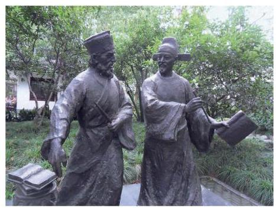
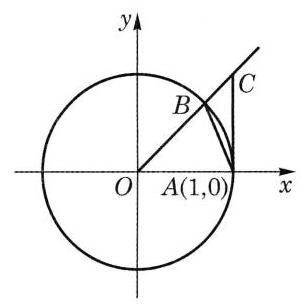
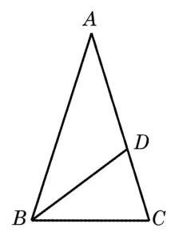
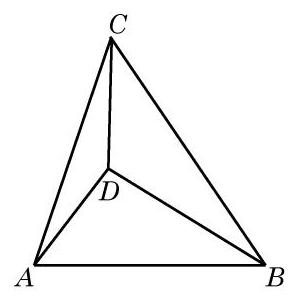

复习题A · 1
- 选择题:
(1)与 一定相等的是 ( )
A. ; B. ;
C. ; D. .
( 2 )当 时，化简 的结果是 ( )
A. ; B. ;
C. ; D. .
答案与解析收起 / 展开
- (1) A. (2) C.
教师整合版 / 沪教版高中数学
必修第二册
第6章三角 · 保留教材主线与原题
教材与正式教参整合
平面三角形的正弦定理是直角三角形边角关系的推广, 余弦定理是勾股定理的推广. 早在我国商代与古希腊时期就已发现了勾股定理(又称毕达哥拉斯定理)，但平面三角的正弦定理与余弦定理却出现得很晚. 在古希腊, 三角学的起源、发展与天文学密不可分, 人们需要使用三角知识来建立定量的天文学，通过测量天体的运动路线和位置用于报时、航海、历法推算和地理研究等, 因此对球面三角的研究比平面三角更早、更深入. 对于平面测量问题, 古希腊人认为利用平面几何知识已经足够.
公元 9 世纪左右，阿拉伯天文学家阿尔·巴塔尼(Al-Battani)以习题形式给出了平面上的余弦定理. 15 世纪，阿尔·卡西(Al-Kashi)给出了余弦定理的下述形式: . 现在所见到的余弦定理是由 16 世纪法国数学家韦达首次给出的. 著名天文学家阿尔·比鲁尼 (Al-Biruni) 给出了平面三角形的正弦定理, 并给予了证明.
1450 年前的三角学主要是球面三角, 而大地上的测量学还是采用几何方法. 最早将三角学从天文学中独立出来的代表人物是德国数学家约翰·穆勒(J. Müller), 其笔名雷格蒙塔努斯(J. Regiomontanus)更广为人知. 他在 1464 年完成了 5 卷本《论各种三角形》. 这部著作首次对三角学作出了系统性阐述，将平面三角、球面几何和球面三角中有关的知识综合起来, 建立了现代三角学的雏形. 法国数学家韦达将平面和球面三角进一步系统化并加以发展. 正是由于众多数学家的努力, 16 世纪三角学从天文学中分离出来, 成为数学的一个独立分支.

扇形弧长与面积:记扇形的半径为 ，圆心角为 弧度，弧长为 ，面积为 ，则有
单位圆:单位圆泛指半径为 1 个单位的圆. 本章中，在平面直角坐标系中，特指出以原点为圆心、以 1 为半径的圆为单位圆.
正弦、余弦、正切及余切的定义:在平面直角坐标系中，将角 的顶点与坐标原点 重合，始边与 轴的正半轴重合，在角 的终边上任取异于原点的一点 ，就有
诱导公式: ， ， ， 的诱导公式，其规律为口诀:奇变偶不变，符号看象限。
倍角公式:
.
正弦定理: .
余弦定理:
.
三角形面积公式: .
(1)与 一定相等的是 ( )
A. ; B. ;
C. ; D. .
( 2 )当 时，化简 的结果是 ( )
A. ; B. ;
C. ; D. .
(1)若 为锐角,则 ___；
(2)若 ，则点 必在第___象限；
(3)若 ，则 ___.
(1) ;
(2) .
(1) ； (2) .
(2)在 中，已知 与 是方程 的两个根，求 .
(1)若 ，且 ，则 的值为( )
A. ; B. ; C. ; D. .
(2)下列命题中，真命题为 ( )
A. 若点 为角 的终边上一点,则 ;
B. 同时满足 的角 有且只有一个;
C. 如果角 满足 ,那么角 是第二象限的角;
D. 的解集为 .
(1)在 中，若 ，则 ___；
(2)若 ，且 为第四象限的角，则实数 ___.
(1) ; (2) .
(1) ;
(2) .
(2)由 ,得 ,从而 ,进一步由正弦定理得 ,所以 . 因此 或 ,即 或 ,从而三角形 为等腰三角形或直角三角形.
1.(1)完成下表 为弧度数):
| 1 | 0.5 | 0.1 | 0.01 | 0.001 | |
(2)观察上表中的数据，你能发现什么规律？
(3)已知 ，利用图形面积公式证明 ，并应用该公式说明(2) 中猜想的合理性.
| 1 | 0.5 | 0.1 | 0.01 | 0.001 | |
| 0.8415 | 0.4794 | 0.0998 | 0.009 999 8 | 0.001 | |
| 0.8415 | 0.9589 | 0.9983 | 0.999 98 | 0.999 999 8 |
(2)当 趋近于 0 时, 的值趋近于 1 .
(3)如图 6-R1,当 时,在以原点为圆心的单位圆中,记 的面积为 ,扇形 的面积为 ,直角三角形 的面积为 ,不难由图得到 ,从而有 ,于是有 . 因为 ,从而有 . 当 趋近于 0 时, 趋近于 1 .

图 6-R1
所以, 的值趋近于 1 .
(1)① ，② ，③ ，④ ，⑤ ；
(2)根据上述计算结果，讨论使 有一解、两解或无解时 的取值情况.
3.(1)根据 和三倍角公式，求 的值；
(2)你还能使用其他方法求 的值吗？若能，请给出你的求法.
(2)如图 6-R2,在等腰三角形 中, . 设 ,作 的角平分线 ,则 . 由于 与 相似,因此 ,即 ,从而

图 6-R2

(第 4 题)